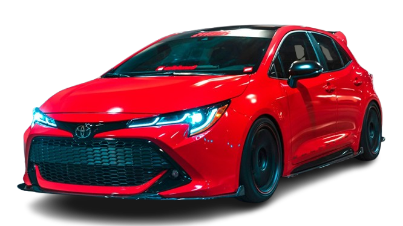
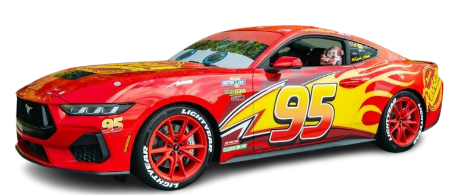
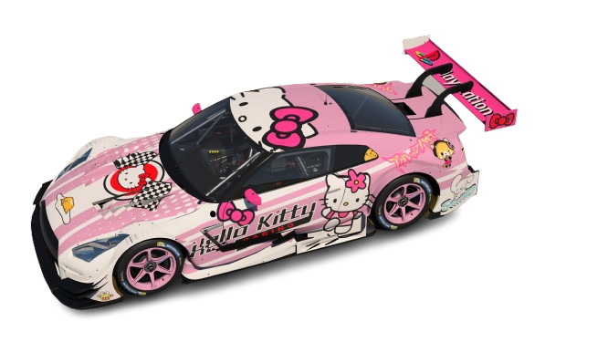

Não é só um carro… é uma máquina! Preparado para quem exige potência, estilo e desempenho acima da média. Com visual agressivo e mecânica revisada, esse Corolla entrega uma experiência única, seja na cidade ou na estrada.
✔ Motor forte e confiável
✔ Ajustes e melhorias de performance
✔ Revisado e pronto para rodar
✔ Ideal para quem curte um carro diferenciado
Se você quer sair do comum, esse é o carro certo. Aqui a gente não faz só manutenção… a gente cria máquinas!
O carro Relâmpago Marquinhos passou por várias melhorias ao longo do tempo, tornando-se mais rápido e eficiente nas pistas. Ele ganhou um design mais moderno, pneus de alta performance e um motor mais potente, o que aumentou sua velocidade e estabilidade nas corridas.


O carro esportivo da Hello Kitty é uma combinação perfeita de estilo e desempenho. Apesar do visual delicado e cheio de charme, ele surpreende com sua velocidade, estabilidade e tecnologia avançada, sendo ideal tanto para passeios quanto para quem gosta de emoção. Além disso, seu design único chama atenção por onde passa, provando que é possível unir fofura e potência em um só veículo.